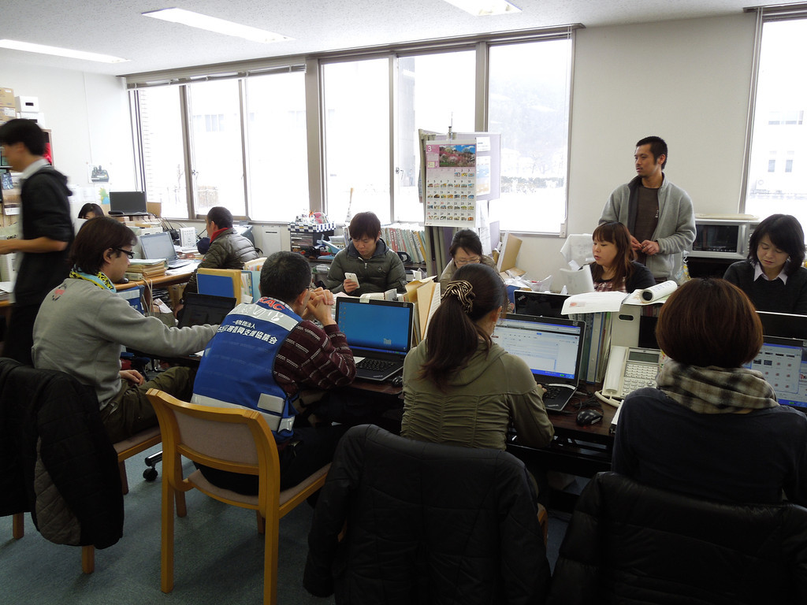

人道支援のためのイノベーション：OCHA助成金受賞者発表
国際的な人道課題に取り組む上で、今革新的なアイディアが求められています。こうした観点から、OCHAは『人道支援に関する研究・イノベーション助成プログラム（Humanitarian Research and Innovation Grant Programme）』を実施しています。先日2013年度の受賞者が発表され、東日本大震災における地方自治体の経験を題材とした、ミザン・バスタヌル・フアディ・ビスリさんの研究が助成対象に選ばれました。
----------------------------------
人道支援のためのイノベーション：OCHA助成金受賞者発表
OCHAが実施している『研究・イノベーション助成プログラム』の2013年度助成金受賞者が発表されました。人道支援のためのイノベーションに資する研究をサポートするため、6名の受賞者はOCHAより小規模助成金を受け取ることになります。
「私たちの活動をよりよいものとするため、イノベーションを進めることはOCHAにとって主要優先課題の一つです。イノベーションとは即ち、人々のニーズにより効果的、タイムリーかつ敏感に対応するための方策を見出していくことです。」OCHA政策形成・研究部門のトップ、ハンスヨルグ・ストロマイヤー氏はこのように述べています。
「このプログラムの目的は、人道アクションに関連する課題に取り組む研究者の能力構築と同時に、人道支援のためのイノベーションにまつわる実証研究を進めることにあります。」
6名の受賞者は背景も様々です。受賞者は、食糧危機の際に現金支給を通じて行う支援の有効性から大規模危機における地方自治体のニーズまで、幅広い問題について調査を行うことになっています。
マラウィの食糧危機と現金支給
受賞者の一人は、マラウィ災害管理省のスターン・キタさん（30歳）です。彼は政府職員として、2012年後半から2013年にかけてマラウィを襲った干ばつへの対応に関わってきました。
南部アフリカ諸国にとって、食糧危機は初めて経験するものではありません。しかしマラウィの取り組みでユニークだったのは、政府が比較的広範囲に現金を支給したという点です。およそ15万人が現金を無条件で受け取りました。（一方でより伝統的な支援形態である、食糧を直接受け取った人々は180万人ほどいます。）
スターンさんはこう説明しています。「マラウィではこれまで、食糧危機対応のツールとして大規模に現金支給を実施したことはありませんでした。こうした革新的な対処法の有効性を評価することは重要（だと私は思います）。」
スターンさんは、食糧配布よりも現金支給の方が明白な利点が多いと指摘しています。まず現金は支給が容易で、配布コストも安く済みます。また現金支給によって、各自が必要とする食糧を選べるよう能力を高めることに繋がるだけでなく、食糧不足に対する自らの脆弱性を緩和するような事業などへの投資に現金を充てる機会をももたらすことになります。
スターンさんはOCHA助成金を用いて、大規模な食糧危機への対処法として現金支給がどのくらい効果的なのかを研究する予定です。
「私の研究を通じて、現金支給が食糧危機への対応に有効なツールであることが明らかになるのではないでしょうか。今後、食糧支援に替わるものとして、現金支給に対するドナーの関心が高まることを期待しています。」
東日本大震災直後の地方自治体の経験
もう１人の受賞者は若いインドネシアの研究者、ミザン・バスタヌル・フアディ・ビスリさんです。彼の関心は、日本で壊滅的被害をもたらした2011年の地震、津波、原子力災害後の地方自治体による経験を理解することにあります。
一般的に日本の災害管理システムは、他の国々にとっての手本とされてきましたが、2011年の災害では、こうしたの日本の対応能力の限界もあきらかになりました。例えば被災自治体は、19もの外国政府が申し出た支援と現地対応との調整を強いられました。加えて、馴染みのない新たな人道パートナーが押し寄せ、しばしばその対応に忙殺されることとなりました。
直面した課題があまりに大きく複雑だったので、ただ圧倒されてしまった自治体もありました。しかしこれらの困難を乗り越えて、新たなパートナーシップ構築を模索したり、災害対応のため新たな自治体業務のあり方を見出した例もありました。これらすべてが、災害に見舞われる他の地方政府にとっても応用可能な教訓となりうるのです。
ミザンさんはこう述べています。「（最終的な）研究成果は、他の国々の自治体が、災害時にも役立ちうる関係を、平時からどういったパートナーと構築しておくべきか考え直す際に利用できるかもしれません。従来の人道アクターと新たな人道アクターの間で、未来に向けた革新的なパートナーシップや組織間協力の可能性を見出すことができればと願っています。」
受賞者は、2014年初めまでに研究論文を提出することになっています。
記事原文（英語）>>